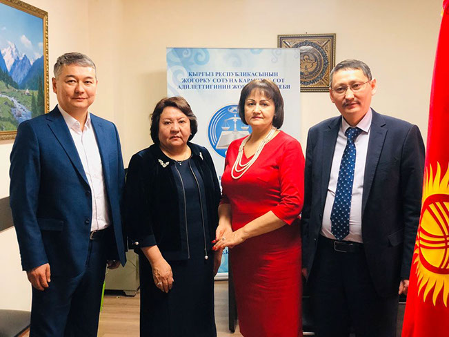
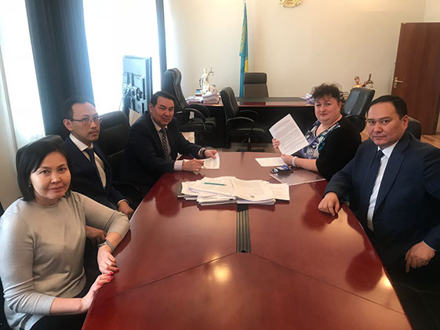
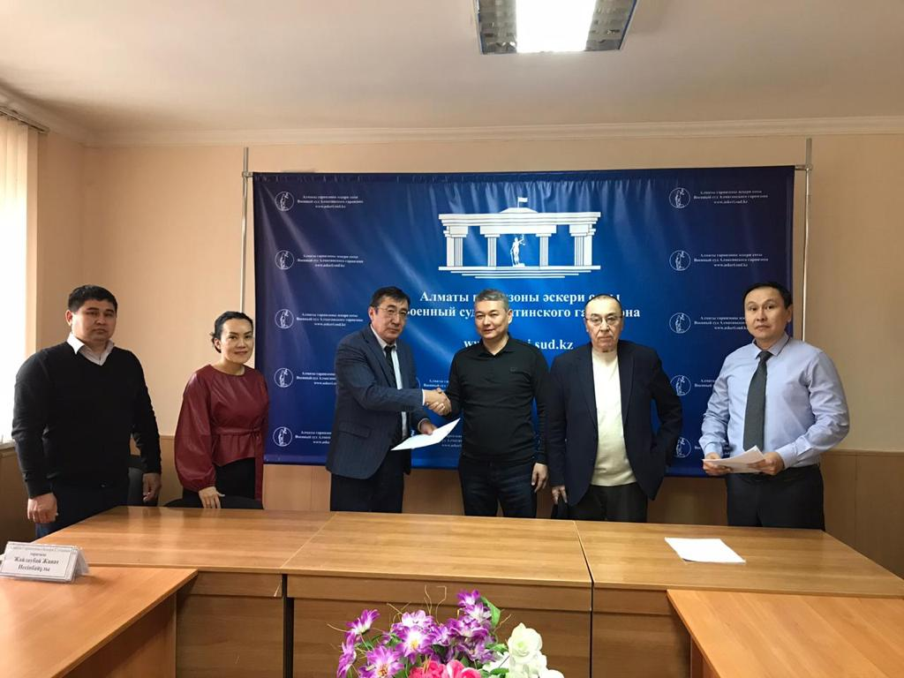

В рамках Меморандума о сотрудничестве между Общественным объединением «Национальный Центр Медиации», Кыргызская Республика, и Республиканским общественным объединением «Евразийский союз юристов и медиаторов «Praktikos», Республика Казахстан, в целях обмена опытом руководители РОО «ЕСЮМ «Praktikos» К.Созакбайулы и Кутовая Л.В. приняли участие в семинаре-тренинге на тему: «Восстановительная медиация. Медиация в уголовном судопроизводстве», организованном для судейского и прокурорского корпуса Кыргызской Республики, прошедшем в городе Бишкек в период с 10 по 13 февраля 2020 года, под руководством Председателя суда города Бишкек Алыбаева Азамата Артельевича.
В целях развития международного сотрудничества в решении международных проблем правового, экономического, социального, культурного и гуманитарного характера, 12 февраля 2020 года в городе Бишкек был подписан Меморандум между Общественным объединением «Ассоциация «Юристы Кыргызстана» в лице Председателя Мырзалимова Руслана Муратбековича, и Республиканским общественным объединением «Евразийский союз юристов и медиаторов «Praktikos», Республика Казахстан в лице Президента Кутовой Людмилы Васильевны.
В рамках данного Меморандума стороны осуществляют взаимное сотрудничество с целью более широкого распространения и применения медиации, как эффективного способа разрешения правовых и иных споров на территории Кыргызской Республики и Республики Казахстан.
20 февраля 2020 года был подписан Меморандум о сотрудничестве между Территориальным Объединением Профсоюзов «Профсоюзный центр города Алматы» в лице Руководителя Умирбаевой Зауреш Абилгожановны и Филиалом Республиканского общественного объединения «Евразийский союз юристов и медиаторов "Praktikos» по городу Алматы в лице Первого вице-президента Каната Созакпайулы.
В Территориальном Объединении Профсоюзов «Профсоюзный центр города Алматы» открыт "Центр внесудебного примирения" по адресу: г.Алматы, проспект Желтоксан, дом 37А.
С целью развития медиации в области гражданско-правовых отношений подписан Меморандум о сотрудничестве между районным судом № 2 Алмалинского района города Алматы в лице председателя Толегенова Серика Кенесовича и Республиканским общественным объединением «Евразийский союз юристов и медиаторов «Prartikos" по городу Алматы в лице координатора по Алмалинскому району Дементьевой Екатерины Вячеславовны.
«Общий курс медиации» прошедший с 10 по 4 марта 2020 года в городе Алматы, предназначен для подготовки всех желающих стать профессиональным медиатором, соответствующих требованиям статьи 9 Закона Республики Казахстан «О медиации». Лица, получившие сертификат по учебной программе «Общий курс медиации» вправе вести практическую деятельность в качестве медиатора на профессиональной основе без права преподавания медиации.
Что дает базовый курс подготовки медиаторов:- Сертификат профессионального медиатора
- Удостоверение медиатора
- Включается в реестр медиаторов
- Возможность пользования клиентской базой по услугам медиации
- Членство в РОО «Евразийский союз юристов и медиаторов «Praktikos»
- Возможность продвигать свои услуги медиатора через сайт союза https://esum-praktikos.kz, страницы ЕСЮМ в Facebook и Instagram
- Возможность получать практическую помощь медиаторов экспертов «Союза» в освоении новой профессии.
С целью развития медиации в марте подписан Меморандум о сотрудничестве между Военным судом Алматинского гарнизона в лице председателя Жайлаубай Жаната Несіпбайұлы и Республиканским общественным объединением «Евразийский союз юристов и медиаторов "Prartikos"» по городу Алматы в лице первого Вице-президента Каната Созакпайулы.
